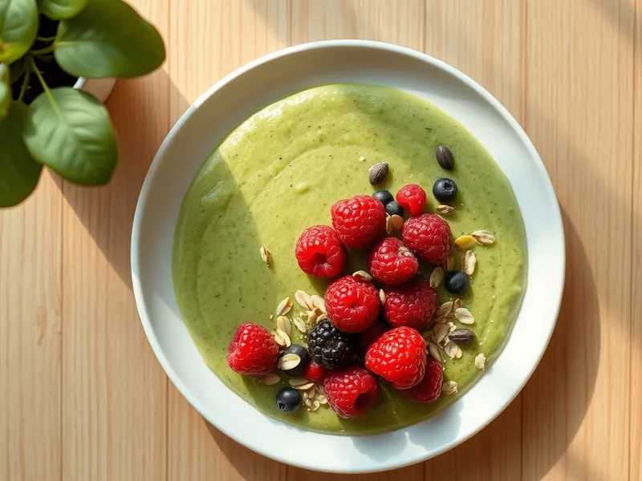

Смузи-боул со шпинатом и бананом
Густой зелёный смузи из банана и шпината в тарелке с ягодами и семечками
10 мин1 порц.334 ккал на порциюБ 14 · Ж 10 · У 45Интернациональная кухня
Открыть в приложении: порции, таймеры, список покупок
Продукты на 1 порц.
- Бананы1 шт
- Шпинат40 г
- Йогурт без добавок120 г
- Ягоды (свежие или замороженные)50 г
- Овсяные хлопья1,5 ст. л.
- Тыквенные семечки2 ч. л.
- Мёд по желанию1 ч. л.
Как готовить
- Нарежьте банан кружками и уберите в морозилку минимум на 2 часа или с вечера.
- Положите в блендер замороженный банан, шпинат и йогурт.
- Взбейте 1-2 минуты, останавливая и счищая массу со стенок, до густоты мягкого мороженого.
- Выложите смузи в глубокую тарелку и разровняйте ложкой.
- Украсьте ягодами, хлопьями и тыквенными семечками, при желании полейте мёдом. Ешьте сразу ложкой.
Совет. Густоту дают именно замороженные бананы. Не добавляйте молоко или воду: смузи станет жидким и превратится в напиток.